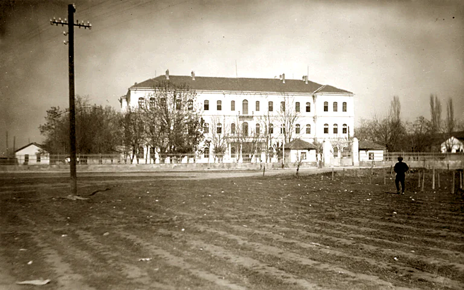
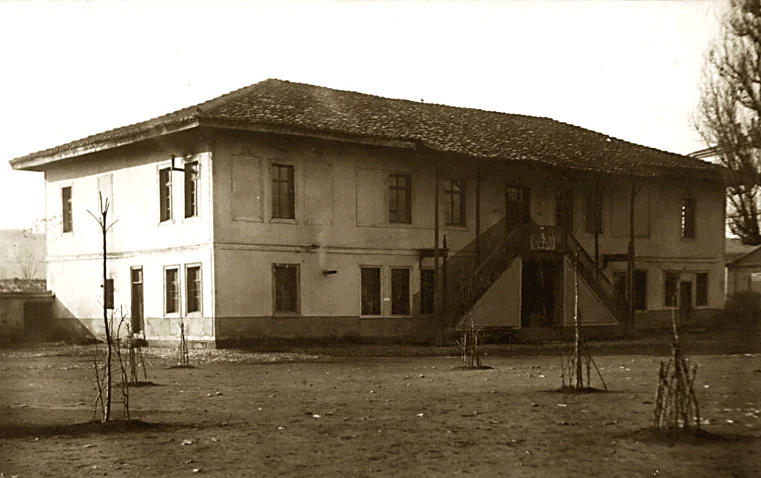
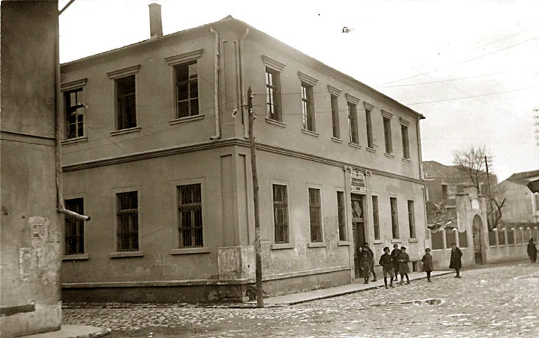
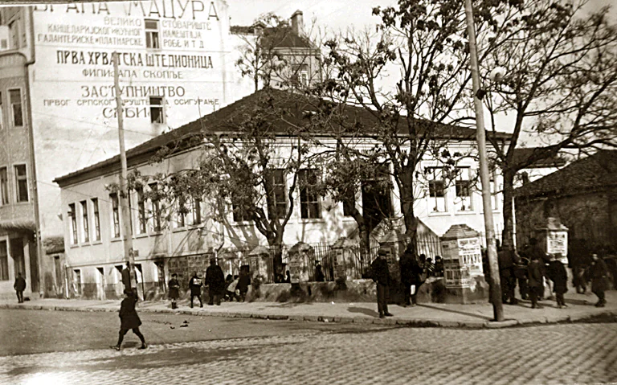
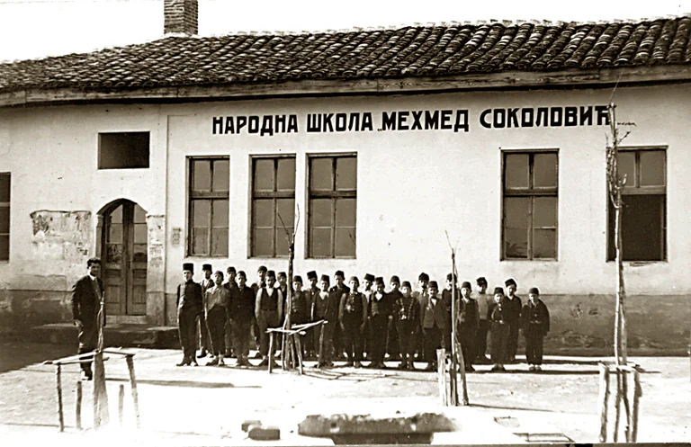
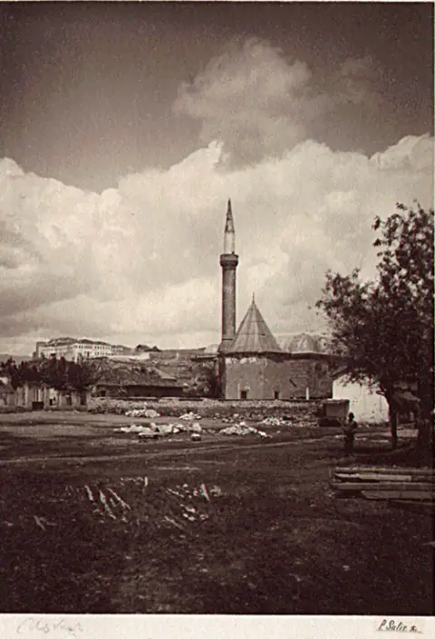

Faculté de philosophie
- Réalisation
- Kole Čašule, Blagoja Drnkov
- Année
- 1947
- Durée
- 00:04

L'école secondaire Idadija. Construite vers la fin du XIXe siècle. L'enseignement y durait huit ans et était ouvert aux élèves de toutes confessions. Le bâtiment devint plus tard l'École normale, jusqu'au séisme de 1963 qui l'endommagea gravement. Il fut démoli en 1965, et l'on conserva en souvenir l'entrée aux quatre colonnes. Aujourd'hui encore, les habitants appellent ce quartier Idadija. À l'arrière-plan, l'école des arts et métiers.

L'école normale (années 1920)

Une partie du parc municipal avec le bâtiment de l'école d'artisanat. (années 1920)

Le bâtiment de l'école secondaire Idadija, devenu après la Seconde Guerre mondiale « École normale », détruit lors du terrible séisme du 26 juillet 1963.

L'école des arts et métiers, construite vers la fin du XIXe siècle. Elle se trouvait tout près de l'école normale. Gravement endommagée par le séisme de 1963, elle a été démolie.

L'université de Skopje en 1920 sur le quai du Vardar. Elle abritait la faculté de philosophie, rattachée à l'université de Belgrade.

L'université de Skopje en 1920 sur le quai du Vardar. Elle abritait la faculté de philosophie, rattachée à l'université de Belgrade.

Le bâtiment de la cour du lycée de garçons. (1912)

Le lycée de garçons de Skopje, construit en 1902-04. Il se distingue par des éléments néoclassiques. Au premier plan, la rue « Poincaré », plus tard « Leningradska ».

Le lycée de garçons, construit en 1902.

La grande médersa, rue Ilindenska (années 1920)

L'école primaire « Sainte-Vierge » - années 1920.

École primaire « Jovan Skerlić » - années 1920.

Troisième école primaire publique (années 1920)

L'école primaire serbo-juive dans le quartier juif.
(fin du XIXe siècle)

L'école primaire « Đura Jakšić » (années 1920)

École primaire publique « Reine Marie » - années 1920.

L'école primaire « Tsar Dušan », à côté de l'immeuble Macura sur la place - années 1920.
L'école primaire « Tsar Dušan », à côté de l'immeuble Macura sur la place - années 1920.

L'école primaire « Branko Radičević » - années 1920.

École publique « Ljuba Kovačević » - années 1920.

École publique « Vladimir Karić » - années 1920.

École publique « Dositej Obradović », dans le quartier Sauk Česma - Čair - années 1920.

École primaire « Vuk Stefanović Karadžić » - années 1920.

École publique « Mehmed Sokolović » - années 1920.

École publique « Osman Džikić » - années 1920.

L'académie de commerce - années 1920.

L'académie de commerce - années 1920.

La cour du lycée de garçons - années 1920.

Le nouveau bâtiment de l'école primaire « Dositej Obradović », construit dans les années 1930.

L'école primaire « Goce Delčev ». (photographiée en 1934)

L'école primaire « Goce Delčev ». (photographiée vers 1950)

Le lycée de filles - la nuit. Au premier plan, le monument aux libérateurs de Skopje. (vers les années 1950)

Le lycée de filles, construit dans les années 1930 ; la photo date des années 1950. Devant l'immeuble, le monument « Aux libérateurs de Skopje »

Faculté des sciences naturelles - années 1950

L'école primaire « 11 Octobre » - années 1960

Faculté technique - années 1960

Revue filmée n° 10
 Aqueduc4 cartes postales
Aqueduc4 cartes postales Kale30 cartes postales
Kale30 cartes postales Ponts60 cartes postales
Ponts60 cartes postales Quai58 cartes postales
Quai58 cartes postales Place46 cartes postales
Place46 cartes postales Édifices66 cartes postales
Édifices66 cartes postales Églises chrétiennes19 cartes postales
Églises chrétiennes19 cartes postales
Édifices musulmans33 cartes postales Cercle des officiers29 cartes postales
Cercle des officiers29 cartes postales Théâtre28 cartes postales
Théâtre28 cartes postales Gare ferroviaire13 cartes postales
Gare ferroviaire13 cartes postales Écoles36 cartes postales
Écoles36 cartes postales Parcs12 cartes postales
Parcs12 cartes postales Marchés18 cartes postales
Marchés18 cartes postales Rues38 cartes postales
Rues38 cartes postales Panorama I60 cartes postales
Panorama I60 cartes postales Panorama II30 cartes postales
Panorama II30 cartes postales Collages55 cartes postales
Collages55 cartes postales Inondations9 cartes postales
Inondations9 cartes postales Séisme27 cartes postales
Séisme27 cartes postales Skopje 200026 cartes postales
Skopje 200026 cartes postales